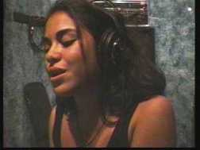
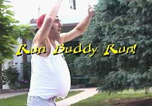

|
(www.BlueCanyonProductions.com)
"Santa Fe's —and therefore the world's—strangest web site. Fascinating sound clips and soul-nourishing content." - Bill Hutchison, staff writer, Santa Fe Reporter (See our Home Page) |
"THE
$2.98 VIDEO COLLECTION"
Celebrating the wonderful world of low-budget video.
Embraced and rejected
by film festivals throughout the United States, these no-budget
videos demonstrate that you don't need a "Titanic" budget to create
real, authentic American Beauty. VHS video #BCV106-B. Total
time: 1hr. 9mins. Price: $19.95 THIS COLLECTION INCLUDES THE FOLLOWING VIDEOS: |
|
LAVERNE'S
VIDEO REVIEW:
Glamorous TV personality Laverne Ganesh is so carried away by the country
music video, "Did It Hurt?," that she flashes back to her previous
existence as Laverne Lapinsky of Scranton, PA. Starring the late and
very great Susan Jayne Weiss, with music by Jim Terr. (2000,
6:15)
|
|||
| THE NARY A STITCH PROJECT: You thought "The Blair Witch Project" was scary? Wait til you see what happened to a documentary crew that ventured into the mountains of northern New Mexico to track down reclusive ex-movie star Tamar Tagwood. Starring Kent Crider with Jim Terr and three hot babes. (1999, 3:03) |
 |
||
|
THE WOMAN WHO WON ROD STEWART'S HEART: Starlets and supermodels have captivated rock's most famous playboy, but the woman who finally settled him down will surprise and enchant you as she tells how it happened. Starring Barbara Mayfield. (1998, 2:58) |
|||
| NEGATIVITY CENTRAL: In case you don't get enough criticism in your life, here's a 900-number you can call to get all the abuse you'll ever need. Starring Susan Jayne Weiss, Eliot Stenzel and Jim Terr. (1996, 9:44) |
|||
|
SEE
THIS VIDEO!!
|
 |
||
| WORDSWORTH: A 1998 segment of the incredibly intellectual phony-dictionary-definition game TV show, taped at Santa Fe Community College with real guests, real obscure words, and a real prize. Hosted by Jim Terr, with "public service announcements" by Mary Evans, Eliot Stenzel and Allison Smith. (1998, 30:37) ("Wordsworth" is a pending service mark). | |||
|
|||
| RUN
BUDDY RUN :
(4:30) "You can always count on Jim Terr for comic relief. Run
Buddy Run, his collaboration with Paul Glickman, parodies the German
hit Run, Lola, Run, except its huffing-puffing protagonist is
a good old boy chasing after a magazine sweepstakes fortune." -Jon Bowman, Pasatiempo, September 6, 2002 (Run Buddy Run was a finalist in the 2002 Santa Fe 3-Minute Film Fest, out of over 300 entries! This is the full 4-1/2-minute version). |
 | ||
| BUDDY's inspiring new anthem of love and peace, "NEKKID" (5:45) Recorded in front of a nearly-insane live audience 10-19-02 at the Tricklock Theater Company's "Reptilian Lounge," Albuquerque, NM, featuring the Tricklock Singers (Kerry and Julie). (See it on the web). |  |
||
| All videos © in the years indicated, by Blue Canyon Productions (www.BlueCanyonProductions.com), Santa Fe, NM, USA. Written and produced by Jim Terr. All rights reserved. | |||

Home Products
Phone/Fax Orders Public
Service Opinion
Humor Satire
Songs Other Services Links Contact
Us